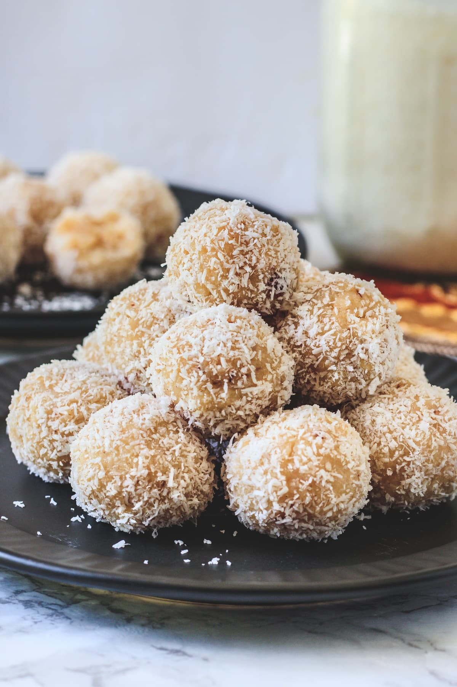

Coconut Ladoo
Our next sweet delight is not as traditional, but will be sure to please.
Herrbas Kitchen gives us his famous Peanut Butter
showcases the famous Indian cuisne treat.

Ingredients
- 2 cups of coconut (fresh)
- 1-1/2 cup milk
- 3/4 cup sugar
- 2 tablespoons cashew (chopped)
- 1/4 teaspoon cardamom powder / elachi powder
- 2 tablespoons desiccated coconut
Directions
- In a large pan over low heat, take 2 cups fresh coconut and 1-1/2 cup of milk.
- Mix well making sure the coconut gets wet completely.
- Add 3/4 cup sugar. Add more sugar for sweetness if needed
- Mix continuously keeping the flame on low until sugar starts to melt
and mixture turns watery.
- Keep stiring with the flame still on low until the milks
starts to evaporate and the mixture turns crumbly. (About 20 mintues)
- Cool the mixture for 10 mintues or until it lightly cools down.
- Add 2 tablespoons chopped cashew and 1/4 teaspoon cardamom powder and mix well.
- Prepare small balls to form ladoo.
- Roll it with desiccated coconut.
- Serve and store in an airtight container for up to one week.
Return to Home